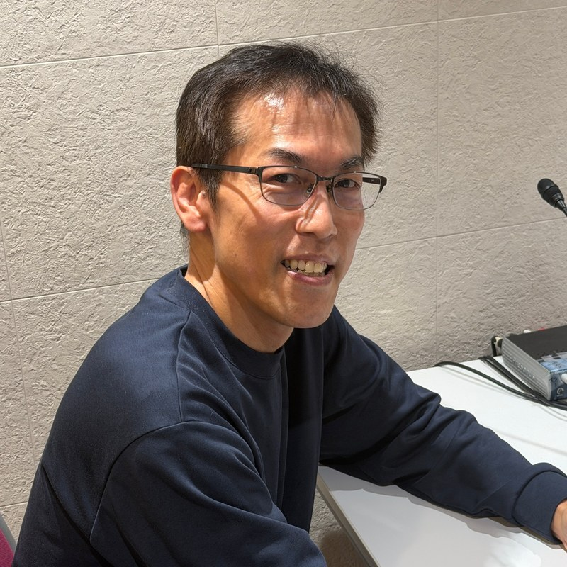
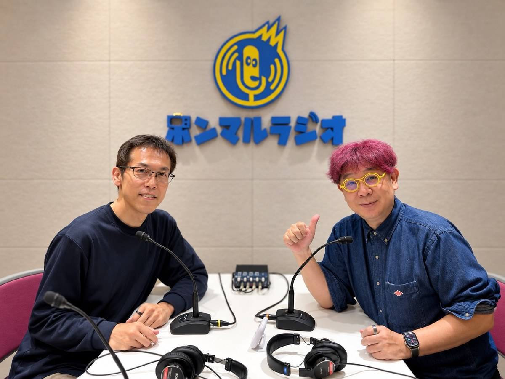

はじめに
創造的な“こと”に自分と時間を活かすための仕組みづくり
「本当にやりたい教育」を、あなたへ。
煩雑な業務から解放する、理学療法教育支援システム
《INTEVE SCHOOL》開発者の想い

大塚 和宏 （Kazuhiro Otsuka）
Creative System Design 代表 ／ 理学療法士
元・理学療法士養成校専任教員（教歴22年）
20年以上にわたる教育現場での経験とデータベース開発技術を活かし、教員が本来の教育と学生に向き合える時間を取り戻すための教育DXを推進しています。
はじめまして。
Creative System DesignのWebサイトへお越しいただいてありがとうございます。大塚 和宏と申します。
私は、20年以上にわたり理学療法士を養成する専門学校の教員として、多くの学生たちの成長を間近で見守ってきました。しかしその一方で、その業務の幅広さと量に、常に忙殺される日々を送っていました。授業準備、実習指導、学生相談、会議、書類作成…挙げればきりがありません。
多忙を極める中で、学生一人ひとりに十分な時間を割くことができず、残業も常態化。「もっと学生と向き合いたい」「本当に質の高い教育を提供したい」という理想と現実のギャップに、もどかしさを感じることも少なくありませんでした。
実は、私がFileMakerと出会ったのは、理学療法士として医療現場で働いていた頃に遡ります。当時から、電子カルテのようなものを独自に構築し、業務効率化の可能性を感じていました。教育現場に移ってからは、その経験を活かし、日々の煩雑な業務を少しずつFileMakerのアプリに置き換える試みを始めました。
正直に言うと、周囲の同僚たちの多くは、ITリテラシーが決して高いとは言えません（すみません）。ExcelやWordの基本的な機能すら十分に使いこなせていない現状、そして共有フォルダでのデータ管理の煩雑さ。「最新のデータはどこにあるのか」「欲しい情報が見つからない」といった問題が日常的に発生していました。
そんな環境下で、私がFileMakerで開発したアプリを導入した職場では、驚くほど業務効率が改善されました。次々とあらゆる作業をアプリ化していくことで、次第に学生対応に当てる時間が増え、本来の「教育」に注力できるようになってきたと自負しています。
近年、我々の業界における教育現場向けのシステムもいくつかの大手企業から提供されていますが、実際に現場のニーズを深く理解しているとは言い難いものが散見されます。長年、教育の現場で悩み、試行錯誤を繰り返しながら開発してきた《INTEVE SCHOOL》は、まさに私が「こんな機能が欲しかった」という、かゆい所に手が届く機能が満載です。
現在、多くの業界でIT人材の不足が叫ばれていますが、初等教育の現場におけるその改善にはまだまだ時間がかかると感じています。また、進化を続ける生成AIも、一部の作業を補助する可能性はあるものの、教員の根幹的な業務負担を軽減するには至っていません。
だからこそ、私が長年培ってきた経験とFileMakerの技術を融合させたこのシステムを世に出すことが、社会貢献に繋がると強く確信しました。
《INTEVE SCHOOL》は、理学療法教育の現場で働く皆様が、時間と労力から解放され、「本当にやりたい教育」に集中できる環境を実現するためのシステムです。煩雑な業務に悩むことなく、学生一人ひとりの成長をしっかりとサポートできる未来を、私たちは創造します。
Creative System Design
大塚 和宏

「医療から IT へ。人の笑顔を求めて辿り着いた道」
なぜ20年以上勤めた教員を辞めて、ゼロからこの会社を立ち上げたのか――。
Webサイトの文章では少し照れくさくて書ききれなかった起業へのいきさつや想いの原点を、インターネットラジオで赤裸々にお話しさせていただきました。
- • 不真面目だった学生時代と、人生観を一変させたマレーシアでの介助体験
- • 教員時代の忙殺と、「手作業のままではもったいない！」という現場での気づき
- • 3ステップを1ステップにするだけで、人はもっと笑える・教育に向き合える
お仕事の休憩時間や移動中のBGM代わりに、肩の力を抜いてふらっと聴いてみてください。
事業概要・知的財産情報
- 屋号
- Creative System Design（クリエイティブ システム デザイン）
- 代表者
-
大塚 和宏元・理学療法士養成校専任教員（教歴22年）／ 理学療法士
- オフィス所在地
- 〒730-0051 広島県広島市中区大手町1-1-20 相生橋ビル7階 A号室
- 連絡先
-
Web窓口: お問い合わせフォーム
- 知的財産権
-
特許取得済登録商標「INTEVE SCHOOL」特許庁 登録商標 第6994552号（区分：第9類・第42類）
- 事業内容
-
・医療系・福祉系専門学校・大学向け教育マネジメントシステム「INTEVE SCHOOL」の開発・運用・保守
・臨床実習ポータル「INTEVE LINK」の提供
・AI即レス予約管理システム「CONNECT」の提供
・教育現場・医療現場のICT活用および業務効率化コンサルティング